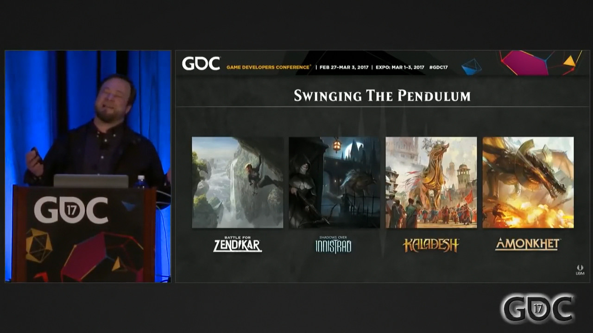
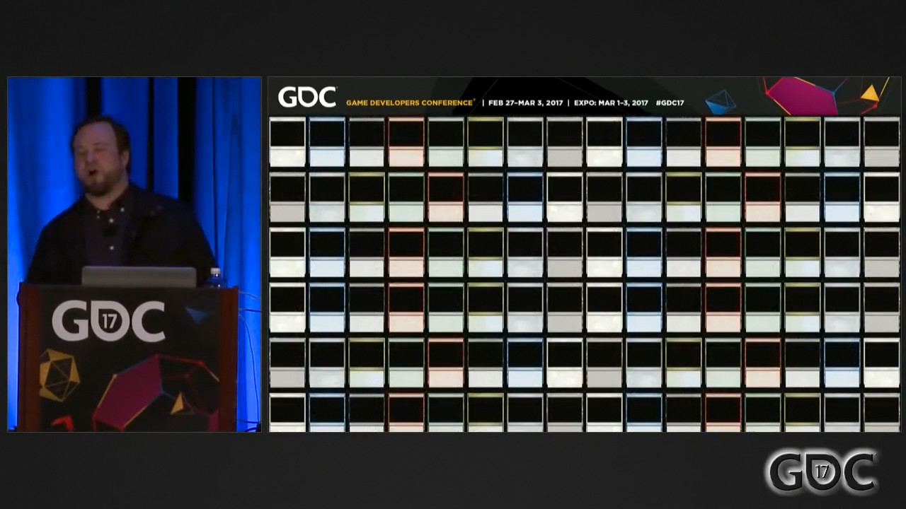

Source:https://www.youtube.com/watch?v=9LijlGLFKTE
大家好 欢迎 今天是星期五 GDC2017的最后一天 本演讲题为《每年创造两个世界：万智牌如何持续打造双倍的世界》 让我来简单说说自己的事 以及为什么你们或许应该关心我讲的内容

我叫Jeremy Jarvis 我是万智牌的首席世界及IP设计师 我是自由插画师出身 是最后一批的水彩画家中的一个 在2005年的时候 我作为首席概念设计师 成为了万智牌内部团队的一员 虽有坎坷 但我在一年之内成为了万智牌的高级艺术总监 就这样在接下来的十年间一直担任这个职务
这就说, 从洛温到现在所有的东西. 我本人为那些世界提供了艺术指导. 我委派他人绘制并自己监督了9000余张卡. 有一段时间, 我是唯一一个艺术总监. 所以过去十年间, 你记忆犹新的某张出色的万智牌. 那是我做的, 过去十年间, 你讨厌的东西去他的. 那也是我做的, 不管怎么说鱼与熊掌不可兼得. 以上就是关于我自己的内容了.
至于你为什么应该关心这次演讲 我不知道 只是他们给了我一个麦克风 让我讲一个小时 所以你也许不用认真听 说到这一点 请给这个演讲评分 这对GDC来说很重要 对我们这个分展会来说很重要 对我来说也很重要
那么 我先说好 这是一个那种古怪的 有具体话题的演讲 我们今天要说的就是《万智牌》 我确信在座的各位很多人都熟悉《万智牌》和我们的玩家或者粉丝 有些人是来自其他行业的专业人士 我知道你们不做实体卡牌游戏 但我们要说的只是《万智牌》和实体卡牌游戏 具体来说 有很多关于《卡拉德许》的例子 因为《卡拉德许》是最新的系列 而且我可以给各位展示很多内幕的东西 虽然我们会讲到打造世界 以及我们实现它的方式 但这次演讲的主题其实是 创造灵活的解决方案 并最大限度地利用它们去解决不灵活的需求 我之所以没以此为题 是因为它听上去实在是太糟糕了 所以我们就用打造世界这个主题吧
这里是一份《万智牌》简史 以防有人不知道
《万智牌》在1993年的Gen Gon上面世 它原本的意图是成为一种人们在游戏展上转场排队时 消遣时间的手段 1993 到 2017 公司里有人帮我算了一下
这是24年 持续了24年之久的产品发布 让我给你展示一下这个概念
对外界来说 这里面每一个标志都代表着几百张卡 对我们威视智的人来说 它代表着学习和迭代
这些都是我上岗之前的东西 现在让我们说说那些更好的吧
我得说明白 《骤霜》不关我事 它不关我的事 我虽然人在那里 但我仅仅是奉命行事
在这24年里 经过这些产品发布 我们学习了 我们迭代了 我想说说《万智牌》现在的样子 以及我们在这24年里是如何成长的
这就是我们现在的样子 《万智牌》还是一个卡牌游戏 一个非常出色的卡牌游戏
但我们用电影化 沉浸式的手段来打造我们的世界 我们想让玩家相信它们 关心它们 关心我们的角色 这是我们的底线 我们把它设的如此之高 人们也因而对此抱有期待 而我们也想要满足这些期待 我们想拥有世界级的外观 而我关注的就是我们对世界的打造 因为我们想要和我们享受过的 喜爱的其他优秀游戏并列
我们现在一年做两次了 我们一年之内要两次构建这样的世界 我想说说 有关这一点的一些背景 还有一年内打造两个世界的代价 那么 让我们先从面对的挑战开始
世界构建不是完全自由的 如果任务只是一年之内创造两个疯狂且优秀的世界的话 那可是再好不过了 对吧 这虽然足够难了 但事实并非如此
这里有限制 第一个限制是《万智牌》的基本性质 魔法的五种颜色

我们打造的每个世界都要覆盖这五种颜色 是五个一起 里面还有陆地类型 它们分别和魔法的五种颜色相关联

这是《万智牌》的资源系统 如果一个世界的设想不能和这五种陆地类型相适应 我们就不会实现它 疯狂的火元素世界 这很酷对吧 里面有岛吗 没有 那我们就不做 这就是我们必须要遵守的性质
还有其他限制 说过了 我们的设计不是完全自由的 我们永远有一个机制层面上的主题 我们相信只有在世界的艺术创意 和该系列的机制紧紧咬合在一起的时候 《万智牌》才是我们的巅峰之作 我们才拿出了百分百的实力
那些机制上的重心有 关注神器 关注结界 颜色组合 巨大的生物 此外你已经看到我们在这些机制空间中进行设计的产物了 神器和《卡拉德许》 结界和《塞洛斯》 颜色对 当然就是 《拉尼卡》和它的公会了 巨大的生物 《赞迪卡》中的奥札奇

说过了 我们起步于一个受限的空间 要为游戏机制 为了这个系列 做出最好的创意设计 我想给各位展示一下我们的生物网格 各位现在看到的就是被我们称为生物网格的东西 每一个系列 都要能填上每一个空缺 要创作卡牌的话 这是必须的
有的系列里面会有小的蓝色飞行生物 我简单解释一下限制域 打叉的东西 不会在《万智牌》中出现 红色不会有小型飞行生物 但有中型大型飞行生物 红色巨龙一类的
如果有画师在脑海中创作出了最好最酷的飞行多头蛇蜥 这就太遗憾了 因为 我们并不能用上它 因为绿色不能有飞行的多头蛇蜥
我想特别地说说里面一个格子 算是解释一下各种限制 例子是《卡拉德许》 让我们说说中等大小的黑色非飞行生物 一般来说 默认的选项 典型的取材对象 是吸血鬼和灵俑
但记住 我们在《卡拉德许》里面是有一个特定的主题的 它整体是乐观的 是美丽的 充满令人愉快的光 你能想象那里面出现灵俑和吸血鬼的样子吗
天啊 这是给谁准备的 这让所有人都感到烦心 但 这也许能让某些人高兴 这我可说不准
之前那说过 制作卡牌要求我们回答这些方格提出的问题 那么就《卡拉德许》来说 我们创造了一个新的奇幻种族 我们创建了乙太种
你知道的 卡拉德许是一个发明家利用乙太驱动疯狂产物的位面 作为那种乙太消耗的结果 这些乙太种是那种循环造就的 有生命的产物 他们是短命的 他们是华丽的 他们很自私 这就是为什么他们属于黑色 因为他们也知道自己的寿命不长 你可以看到他们一点点碎裂 将乙太释放回环境之中 他们很美丽 他们能融入卡拉德许的氛围 他们有种浪漫的悲剧色彩 更重要的是 他们 非常卡拉德许 他们符合这个世界的宇宙观 而且那些工作 那真的是很多工作 都只是给一个方格的 这里面还有很多方格 为了剩下的一切 它们都必须被一一解明
另一个限制 现在我们一年要创造出两个世界 所以我们比以往任何时候 都更要做到我们所谓的“晃动钟摆”

从《赞迪卡》中开阔的风景 秀丽的景观 到《依尼翠》的那种静谧紧张 有些幽闭的恐惧 到《卡拉德许》的明亮天空和积极氛围 再到几周之后就会面世的《阿芒凯》 对此我不能多说 但它绝不是《卡拉德许》 我们知道 改变背景设定的样貌和色调是很重要的 因为现在我们需要让人们以二倍的频率感受到那种兴奋 我们每年会造访两个世界 所以我们的计划一直都是 不仅仅要不同于上一个世界 也要不同于那些 我们接下来要做的世界 所以我们必须要小心寻找我们的方向 以上大部分都是创作上的限制 或者卡牌系列给我们的限制
现在让我们说一个逻辑上的限制 全球同时发售

我们不会改日期 没有所谓的软发售 没有所谓的软补 日期一天都不能改 这就是原因 我们一共要印出11种语言的《万智牌》 我们在全球七十余个市场里发售 而这些卡牌必须要在同一天 到达各个牌店 我们组织化的竞技系统遍布世界 锦标赛的组织者 需要提前租借场地 有的时候要提前好几年 我们的发售日绝对不会变 这是个非常严格的约束
好了 在说过这一堆限制之后 让我们来谈谈不灵活的需求 我们需要每年打造两个世界 这是我们的发售模式 这是组织的需求 为了能做到这一点 我们每年都要两本这个东西
 世界指南
多亏了这个东西 我们才能保证卡牌质量
同时让一个系列的所有卡牌展现出同一个世界的风景
因为
绘制这些卡牌的
是我们建立的一个全球人才库
世界指南
多亏了这个东西 我们才能保证卡牌质量
同时让一个系列的所有卡牌展现出同一个世界的风景
因为
绘制这些卡牌的
是我们建立的一个全球人才库

我不认为很多人知道这一点 在威视智里面 其实是没有人负责绘制卡面的 我们没有自设的工作室 全部卡牌都是外包的 为了能让各个世界诞生 我们和自己能找到最有才华的人合作 建立了这个稳健的绘图工作流 正是那个世界指南 让我们能充分的利用这个环球的人才库
此外 我们一直在给这个人才库纳新 因为我们必须如此 因为我们要制作很多很多的卡牌 这样一来 这个世界指南就必须足够丰富 足够稳健 可以满足全部卡片的需求
它包含了数以百计的概念插画 时常有几百页 它不止面向画家 也是面向作家的 所以说 我们不是简单设计每个种族就完事了的 我们需要变体 变化 因为卡牌 因为卡牌有很多

这都差得远了

这差不多 但仍然不够 差不多是450张卡牌 一个正常的环境 需要450张卡牌 也就需要同样多的插画
此外你要知道 这些都是游戏的一部分 这些插画是承载了功能的 如果你坐在对面 因为插画认错了一张卡 这会让你输掉游戏的 对吧 在餐桌上的时候 这种体验可不太好 因为这个输掉职业锦标赛 那可就太糟糕了
所以这个世界指南是要实现一个真正的职能的 它得支撑起一个世界 好了 回顾一下我们的需求

一年两个世界指南 每个覆盖450张卡牌 他们收到特定的机制的限制 我们有一个自设的 我们喜欢 玩家期待的高底线 我们的日期是定死的 此外 我们内部 一共有两个概念设计师 我们要靠两个概念设计师达成这些工作 还有 我们组织也已经习惯在三周之内就看到这堆材料了
现在让我们来说说解决方案 我们面对各种限制 满足全部需求的答案是
合同工 我们签合同工 和其他人一样签合同工 这就是我们的答案 如果演讲到此结束 我就这么走下台的话
总之我们确实会签合同工 这三周之内我们会找五个人 但真正的解决方案是 我们的概念推动会

我们接下来要说的就是 我们学到的 组织我们自己 优化我们的流程 让解决方案变得可持续且有效的方法 好了 让我们深入讲解吧
我们先从更轻松的时候开始 我很怀念这些 那时我们的发售模型就是这样的

我们每年只需要打造一个出色的世界 要知道好莱坞要花七八年才能做到这一点 很多游戏也得花上三四年 我们每年只需要做一个 一个世界指南就能覆盖三个系列 然后就是核心系列 这个传统上而言不需要概念支持
那么基于这个模型 让我们阐明这个解决方案 以及它有效的原因 我们先从万智牌的R&D部门开始
注R&D：Research & Design 研究设计部门
首先是我们高贵正义的艺术创作者 然后是游戏设计师 R&D的这两部分要对同一个领导实体负责 这就是万智牌R&D 我现在可能真的有麻烦了 我的部门还没看过这些

总之 这就是万智牌的R&D部门 重点是 我们的艺术创作者不是来干服务业的 我们不想形成那种“互相派活”的文化 我们是字面意义上的同一个团队 而且不是那种做作的 “我们都是《万智牌》团队的一员” 的意思 是我们有同一个上司的意思 我们想让《万智牌》有这样的融合
如前文所说 我们相信 当机制和世界的创意设计相互咬合的时候 我们才能达到自己的巅峰 而这就从最基础的层面上 体现了我们想成真的想法 我们想让其成真的想法 注：口误 我们实际上就在用这个理念组织自身 现在来说说我们的流程 我们想要融合 不想要“互相派活”的文化
这是一份展现了我们流程的图表 我们从一个基础概念开始 这可以是从下到上的 比如一个想要的机制 比如颜色派别 也可以是从上到下的 比如《万智牌》版本的埃及世界
我们先在基础概念上达成一致 之后R&D的两翼就开始工作 然后很快我们就会在两个队伍之间交换成员 我们会在初步世界构建团队里保留一个机制设计部门的成员 然后他们也会出人到机制愿景设计团队里 在机制愿景设计团队里留一个联系人 在整个流程里 我们无时无刻不在相互提示 相互回应 相互合作 当然 有时候还是要互相派活 就算工作过程如此灵活 一些派活仍然不可避免 但我们没有“互相派活”的文化 我们想要一个相互融合的文化 来让我们做出好的产品 来让玩家享受乐趣
接下来我要用几个例子 展示一些潜在的问题 算是警示寓言吧
2011年的时候 我们发布了《依尼翠》 《依尼翠》的核心机制是墓地 林林总总的东西进入墓地 从墓地里出来 呆在墓地里面 很诡异 是哥特恐怖 里面有吸血鬼 有灵俑 很合理 对吧 关注墓地 哥特恐怖 然而十年前 有另一个系列具备同样的机制重心

《奥德赛》也是以墓地为核心 林林总总的东西进入墓地 从墓地里出来 呆在墓地里面 它是关于小型决斗的 里面有这些被称作Cephalid（章人）的章鱼人 还有人鱼 还有一个叫映奇宝珠的神器 有艾文 还有《制图师》 关注墓地 然而有的时候 显然的 如果你把他们两个并列在一起 《奥德赛》就显得有些问题
过多的“派活”给它带来了断裂感 里面没有足够的融合 艺术创意和游戏机制的中心彼此分离了 这并不是在说它看上去不好 它看上去很不错 《奥德赛》里面很多优秀的作品 但这个世界的概念很明显没有和创意重心相互咬合 我是说机制重心 他们在这个过程里 有些迷失了 没能建立各部分的联系 我们想避免这一点
规划我们自己的工作 将难处理的部分挪到前期 这就是我们和艺术创作者在迭代之中真正学到的东西 在我们自己的工作中 我们绕不开的工作里 有哪些是适合拿到早期来做的 对概念推动会来说 做到这点是很重要的 原因如下 我们只有三周 没有到处观望的时间 我们没有时间留给那种 “当我看到它时 我就能知道是它” 的态度 之前说过 我们没有自己的艺术工作室 如果我们有 那这种态度可能很不错 然而那对我们来说太过奢侈
此外 我们不想给艺术家们做太具体的规定 但为了能让他们更易成功 我们确实想对自己的工作 有够的了解 防止他们加入之后盲目地浪费时间 有关“什么样的工作适合放在早期”这个问题 我们找到的一个平衡点是 定义《万智牌》给既定对象带来的转变

这里有一个真实的例子 这是《阿芒凯》 当听到同一个词的时候 人们能想到不同的东西 《万智牌》版本的埃及世界 好吧 我们需要定义它 它不是脏兮兮 沉寂的 考古盗墓世界 而是一个有生机的 繁荣的 美丽的幻想埃及 这是《万智牌》对埃及神话的诠释 而且它是尼可波拉斯的据点
所以要先定义它 以便人们能有加入之后有个起步的基础 我们也要定义那些不会被考虑的东西 现有的这个类别里面 哪部分是我们不感兴趣的 之前说过 我们必须要吝啬的对待主题 这是为了我们能持续的制作新系列 为了未来的自己 我们要筛选掉一些东西
《卡拉德许》就有很好的例子 我们想要一个 有关发明家的位面 里面会有很多神器 很多人 很多人造生物 我们希望这里充满创新 积极向上 不是讲一个机器崛起的故事

随便说一嘴 一个创造人造生物的发明家位面 很容易让人们想到那边 所以我们一开始就在前面把这些都说清楚 不用费事去制作那类卡片 也不用给那些卡片画图 在这 我们不做那些东西
这个世界里面 繁荣的奇幻种族是什么 为什么如此 这又回到前面的生物网格了 我们尽可能在前期做出这些决定
里面会有精灵或者那伽吗 他们在那里做什么 为什么而存在 我们的白色的非人种族是什么 狮族吗? 是矮人吗 他们属于红色 还是属于白色 我们需要做出这些决定 而不是一副 “我不知道” “你懂的” “我们看见它的时候就明白了” “你自己摸索吧” “也许是精灵也许不是” 的样子 我不介意告诉各位 我们已经犯过这样的错误 这就是为什么我们对此有如此深刻的教训
我们的态度也曾是“嗨 语言要比画要灵活敏捷” “那就先让画家们进来画一堆出色的作品” “然后我们为这些画写作吧” 我们在一次又一次的迭代中意识到了 我们这样浪费了很多时间 有时候还会让画家沮丧
结果在概念推动会之后 我们还要做很多工作 才能完成这一阶段的任务 所以 我们早期进行的讨论之一 就是决定生物网格的内容 这一个是相关的 世界里面有什么组织 为什么他们很棒
很多时候我们会创造工会 部落 或者派别 一类的卡牌类别 也会想出帮艺术家为成功做准备的方法 以便他们在没有过多指示的时候 也能找到方向 我们不想直接告诉他们要画什么 对吧 如果我们直接说 “波洛斯就是尖头盔和弯刃剑” 那我们不需要这般有才华的人就能做出产品 我们想和我们能找到的 最有才华的插画师合作 我们也想尽可能地给他们最多的自由 但最后 我们仍需让打造出的世界符合我们的想象 我们的需求也要得到满足 所以我们在早期就会谈谈这些组织所做的事情 他们关心的事情 他们在世界里的角色 所以我们可以从“正义军队”的角度来描述波洛斯 让画家们弄清楚这在视觉上的含义 而不是浪费时间说什么弯刃剑 这基本就是我们会在早期解决的内容 而这就把我们带到了走向成功的第一座里程碑 就是这个起步文档

这真的就是《卡拉德许》起步文档的照片 这在科技上来说 并不是什么惊人的一步 但对于想法和我们本身来说 是一个伟大的成就 总之就是之前说的 把无论如何都要处理的事情挪到前面来 我们还有一个展示 我们会在概念推动会的第一天用它 向画家们展示我们对世界的想法 吸引他们 让画家们因我们对世界的想象而激动 因为情感上的投入越多 你们都懂的吧 艺术创作者们就能拿出更好的作品 总的来说 我们尽可能给他们自由 我们做一个起步展示 然后让他们开始工作
那么 从这里开始 我们开始创造一个反馈循环 我们在环球人才库里面 找人参加概念推动会 之后我会详细说说这个反馈循环 说到这个反馈循环 我说不是 “健康沟通” “是时候改变了” 那种循环 我指的是“音量”意义上的循环 让麦克风意识到自己的声音 让信号的源头 意识到自己发出的信息 先记住这个反馈循环 我们之后会详细谈谈这个
在这三周里 我们会找来五个画家 他们会成为我们的搭档 在制作《万智牌》的一个重要阶段中出力 接下来要说的 是我们如何最大限度地利用概念团队 有一些世界有自己独有的需求 于是我们就找能解决这些问题的专家 让他们加入到这五个人之中 一个很好的例子是《拉尼卡》
拉尼卡是一个被城市完全覆盖的位面 猜猜我们需要什么 一堆能画一堆建筑的艺术家 如果有需要 我们还可以加人 这就是概念推动会的灵活之处 这时候 建立清晰概念的作用就体现出来了
我们能建立一个团队文化 这很重要 因为我们是找自由职业者来创作的 大概大学 就是他们大多数人经历过的 最后一个需要合作的环境 一些人从来没坐过办公室 他们已经很久没和其他人合作过了 也很久没收到过 有关作品的公开反馈了 很重要的一点是 我们要选择
 能带给我们这种文化的人
而不是带来这种文化的人
如果我们认为有两个插画师可能合不来
我们就把他们错开
我们可以具体情况具体分析
我们还要减少其他挑战
这可以通过控制人选来做到
就比如说沟通问题
因为我们是从全世界找合作伙伴的
他们并非都以英语为母语
这没什么大不了的
只是我们必须要意识到这一点
以免我们一时间邀请了过多的人
走进一个 他们字面意义上难以互相沟通 难以和我们沟通的困局
能带给我们这种文化的人
而不是带来这种文化的人
如果我们认为有两个插画师可能合不来
我们就把他们错开
我们可以具体情况具体分析
我们还要减少其他挑战
这可以通过控制人选来做到
就比如说沟通问题
因为我们是从全世界找合作伙伴的
他们并非都以英语为母语
这没什么大不了的
只是我们必须要意识到这一点
以免我们一时间邀请了过多的人
走进一个 他们字面意义上难以互相沟通 难以和我们沟通的困局

我们很小心地选择让谁什么时候加入进来 就是为了避免这些潜在的问题 当我们为某一个背景设定 决定好人选的时候 我们就达到了第二座里程碑 我们希望我们真的给那个世界 那些挑战 打造了一个最优的概念团队

这时候 我们要么已经为自己做好了准备 让正确的人能随时参与进来 立即行动 要么我们就完了 这是一座里程碑
现在让我们来说说这宝贵的三周的具体安排吧.

第一周 自由探索 在概念推动会之后 有了那个文件 还有那个展示 我们就让他们自行探索 吸引他们的东西 让他们激动的东西 无关他们的特长 无关我们对他们的预期 第一周是自由行动 我们会看到很多怪东西 大部分都不会被用到 但这可以引出我们意料外的灵光一闪 那种我们原来没想过的好点子 我们找来这些非常有才华的人 这都是有理由的 我们不想妨碍那些灵光一闪的出现 那么 第一周 自由探索
第二周 我们开始收紧缰绳 我们需要迫使世界成型 这一张我们概念墙的真实照片 好像是《塞洛斯》概念推动会的照片 经过一轮筛选 我们会找出最好的那一批 注释：听不清 这时候艺术总监必须抱歉地拿掉一些 效果不好的东西 我们开始定下材质和造型语言 开始使用设计主题
着重强调它们 以便这些东西能扩散到其他作品之中 就这样我们开始朝着同一个世界风貌前进
第三周 我们开始采用战术 我们开始配发任务

在座的都知道 画家们最喜欢任务了 先不看 这是Eric Deschamps 先不看这个有意思的照片 这真的是个很积极的过程 因为 在那个 你懂的 这就像是漏斗 从一个非常宽的入口开始一点点收缩

在第三周的时候 他们也都明白 现在他们面临的挑战都好像英雄史诗一样 我需要你 有才华的艺术家们 去弄清楚这里该有什么样的巨龙 我需要你 改掉这个不怎么合适的东西 而且他们真的都毫不退却 总之 第三周就是战术性的任务 然后在第三周的末尾 我们就迎来了第三个里程碑 一堆概念艺术
这真的就是“一堆”东西 里面有很多资产 在达到这个里程碑的时候 要么世界指南已经保质保量 要么我们就完了 此外还有一个清理和整理的阶段

我们的两个内部概念设计师 开始掌舵 开始编辑工作 并让所有东西都相互照应 填补空缺 这活可以做好几个月 我们要统合所有材料 保证世界指南的质量达标 风貌合意 因为这个世界指南 就是我们第四个 也是最重要的里程碑

当世界指南完成的时候 产品 卡牌 我们的人才库 要么已经做好了走向成功的准备 要么我们就完了
这就是我们从《洛温》到《鞑契可汗》这段时间里 不断迭代的流程 然后概念设计的轻松日子就到此为止了 需求改变了 我们的产品发售模型从这个 变成了这个
一年两个系列 每一个都有自己的艺术设计 这意味着 我们不灵活的需求 从一年用一个出色的世界指南 制作几百张有世界级插画的卡 翻倍了 我们需要做两次

我们不能牺牲质量 也没有额外的时间 也不能把团队扩充一倍 在这样的条件下 我们必须弄明白 怎么实现这一点 而且在未来也能持续做到这一点 于是我们的新的灵活解决方案就是
我们老的灵活解决方案
我们就做两次 这是个灵活的解决方案 它是可扩展的
那些我们学到的教训 让我们能做到一年一次的那些经验 比如什么样的材料应该在早期处理 我们的组织应该怎么工作 我们如何避免“互相派活”的文化 这些有用的东西 它们都可以扩展 只是我们必须要真正掌握它们 这也确实带来了一些新问题 这个清理整理的阶段 我们以前有好几个月的时间 现在我们的概念设计师没有这种奢侈了 所以我们要找到一个新方法 更快的完成阶段性任务 以便我们能尽早开始下一次概念推动会 的早期工作
所以 为了做到这一点 我们的概念推动会仍然是可扩展的 所以我们就多做几次 我们设置了一个小的推动会 就在原本的推动会之后 我们找来三个画家 参与额外三周 帮助我们给这一阶段收尾 这让我们可以更细致的选择什么时候让谁加入 举个例子 我们在第一次概念推动会的时候 会找来更多国际性的人才 我们发现 一个好主意是 在之后的推动会里 找来更多本地的艺术家 我们有很多画师 有几个是西雅图的本地人 我们合作好几年了 他们可以马上参与进来 他们知道这是个不同的挑战 这个挑战是整理材料 编辑材料 帮我们达成阶段性结束 而且我们真的和这些画师建立了这种关系 所以需要的交流就不那么多 他们理解自己的工作 知道自己在做什么 他们加入进来 马上就能解决问题 做的非常精彩 干净利落
总之 一个灵活的解决方案是可延展的 这就是我们的做法 第一次面对问题的时候 面对一年一次的模式的时候 整件事其实要难得多 现在我们知道该做什么了 只需要扩展规模就可以了
这个有点离题了 但也值得一谈

概念推动会 一种体验上的设计 这个美好的解决方案里面有一个潜在的坑 就是其依靠这些自由插画师 非常有才华的自由插画师 对吧 这些插画师有他们自己想干的活 他们不欠我们什么 他们可以拒绝 而我们需要他们自发地同意 因为我们需要吸收那种级别的才华 不只是一般的 “别做混蛋” “去机场接人” 我们的创意设计师们可都是好人 我是最糟的那一个 就额外说一嘴 我们和他们会一起出去玩 带他们爬山

我从不踏出办公室 但据说在西雅图有很多酷事可以做 有各种小径 有山 《Frasier》的故事就发生在那里 我们还一起组乐队

我们 我知道这是不合法的 这严重超载了 但他们真的玩的很尽兴
此外 我们还能认识到这些人在办公室之外的一面 他们也能了解我们办公室里面的文化 我们能从个人的层面上认识他们 而且 我们已经对他们有认识了 我们和这些人一起工作 把画外包给他们 我们当然知道这些人很有才 也知道他们可靠 我们基本上知道这些人里面有没有反社会者
但是 我们会和这些人面对面的相处 而正是因为这一点 概念推动会就成了一个隐秘的招聘机制 确实如此 它以前真的是一个隐秘的招聘机制 直到我在这里把它说出来了
在我们的7个艺术部门创作者中 有五个人 都通过这一机制成为了我们的雇员 他们为我们绘制卡面 参加概念推动会 而当我们有机会扩员的时候 我们可以直接联系那些 参与过这个年年都有 奇怪但美好的流程的人 熟悉我们 熟悉威视智的文化 至少知道个大概的人
这个流程确实有效 我们四个艺术总监 有三个都是这么来的 我们两个内部概念设计师也是如此
现在让我们审视一下这个灵活的解决方案 看看它是如何影响 我之前说过的反馈循环的 当一个信号的发出者 意识到自己发出的信息

我们组织是这样的 一个结构合理的组织 万智牌 R&D 他们的工作是做卡 很多很多卡 因为我们要制作很多很多的卡牌 我们需要这个强健的环球人才库 我们密切关注这个人才库 选出完美的五个合作者 让他们入伙 在概念推动会里和我们一起工作三周 然后这个概念推动会 会交出一份世界指南作为答卷 然后这个世界指南会成为制卡的基础 很多很多卡 因为我们处在一个做很多很多卡的组织 我们就需要一个环球人才库 然后又是概念推动会之类的 之后 等到 我们有机会进行组织扩员的时候 这个概念推动会就成了我们的征兵场 就这样 这样我们就有这整个系统 一个 因为我们一直选择 这样做事 工作本身就开始变得更加简单可持续 的系统
现在我要抛出一些总结性的问题 我很爱做的一个 但是有时会令人沮丧的实践是 当我们发现有什么真的很适合《万智牌》的东西的时候 我们关心的美学观也好 处理某物的方法也好 流程也好 不管是什么 只要这种手段违反直觉 但效果却很好时候 试着反向研究一下 如果我们足够聪明的话 我们会问出什么样的正确问题 来将自己引导到这些答案之上
然后 如果我们真的可以预知未来 我们会问自己这些问题 来得到答案 得到这个很有效的流程 现在我把他们留给你们
你能改善组织结构 以便其更好地反应你对产品的需求吗 这就回到那个组织架构图了 我们有同一个上司 因为我们希望创意和世界的概念设计能完全融合
你能妥善安排自己的工作 以便让下一阶段的工作更容易成功吗 我说的是你自己的工作 你无论如何都要做的事情 我没说变革整个组织架构 那个只属于你的沙盒
你能只通过改善工作方法 采用更好的规划 来为下一阶段做好准备吗 你能给那些造成困难的 年年都有的需求 找到一个可持续的解决方法吗 以前 概念推动会对我们来说是个危机 而且它年年都会发生 如果这年年都会准时发生 那就没理由放任它成为反复的危机 要给它找一个可持续的解决方案 制作真正能给人们带来快乐的游戏 不应该这般令人苦痛 给你年年都有的需求找一个解决方案
你不灵活的生产周期里 有哪里可以引进灵活的解决方案 你要如何完全利用那种灵活性
然后就真的是最后一个了. 如果别的你都不想看. 我真的希望, 无关领域, 你能思考一下这个问题.
有什么需求 可以让你引入一个愈久弥珍的流程作为解决方案 想想那个反馈循环 有没有什么地方 让你可以设立一个系统 程序 流程 这类东西 让你在选择这种工作方式之后 随着时间流逝 用这种方式进行工作的难度 也会降低 说完这个 我看我们还有时间 我想请各位 提问 我乐于回答你们的所有问题
好了 各位 这是GDC的最后一天 我知道GDC里每个小时安排都很重要 这是不短一段时间 这里有这么多人才 有这么多值得学习的东西 我非常感谢各位在我一起度过一个小时 和《万智牌》一起 和威视智一起 谢谢各位 噢 你正好背光 没看清 抱歉 欢迎提问
嗨 感谢你带来一场如此有深度的演讲 作为一个有志成为制作人的人 能了解你管理艺术流程的方法 对我来说真的很有帮助 我的问题是 你说过你的公司有一个非常具体的时间线 那么你是否处理过那种生死时刻 比如你当天就要发售了 如果你进度还不够的话 你会怎么做 你需要... 你会怎么处理这种事呢
发售不会推迟. 不论如何, 一定?
他一定 是的 我们永远都是准时发售 就我所知道的 我们一直都是准时发售 所以有关我们怎么处理生死时刻 真正的答案就是... 我们有会经历很多次发售 我们每三个月就会发售一个大系列
所以如果你不断遇到生死时刻 不止一次两次 我们会尝试采用一种新流程 或者说新方法 来规划我们的工作 我相信一切优秀的流程都有一个对抗目标 你知道 我没聪明到可以再这里说 “理想情况下 这就是完美的解决方案” 但我知道我讨厌有些事重复发生 我们会以此为轴 找到完成工作的最好的方式 是的 生死时刻会有的 就开发卡牌系列来说 我们一直有想尽可能工作到最后一刻的想法 而这带来了很多压力 我们想尽可能多地获取那些关于游戏环境的真实反馈 所以虽然理论上我会想要尽可能早地开始工作 为了那些真实反馈 我们需要尽可能的等到最晚 这是为了开发出最好的产品 为了这个系列 为了游戏环境
所以生死时刻是会有的 也会有发生在最后一刻的改动 有的时候卡牌改的太多 以至于插画已经不适用于它了 我们就要找好友 从那个艺术流程里找人帮忙 所以这个答案就是试着去预知它 别让它发生 如果发生了 挺过去 这就是为什么它叫“工作” 不叫“快乐时光” 好的
这边的问题, 谢谢.
这真是个非常牛逼的演讲, 谢谢. 我想问的是, 看上去你已经在很长的一段时间里, 不断地给这个游戏优化流程. 以至于现在它已经井井有条了. 我想知道, 你觉得这些经验能很容易的转移到另一个游戏身上吗. 还是说你觉得这是具体的, 这一个游戏的运作方法. 是《万智牌》的完美流程. 但其它游戏还需要花上十年来找到好的流程,
我觉得这对《万智牌》来说是个非常好的流程 我之所以在一开始的时候就明确说了 “这会很怪很具体”一类的话 是因为我不认为我们规划东西的手法 这类东西... 我认为最后的那些问题 很适合问问你们自己 但每个游戏 比如说《龙与地下城》 我们在通一栋楼里 他们的流程是完全不一样的 不同的需求 我们确实会来回分享经验 有的时候还会共享人员 但我们在用非常不同的方式制作东西 如果我们制作的东西的方式如此不同 就算我们在同一建筑同一层楼 我也不可能莽撞到直接走过去说 “我把你们的问题都解决掉了 你们要做的就是找五个人干三周活” “谢谢” 这对我们来说真的很有效 我没说它已经完美了 对吧 但它很有效 我们能一直保证质量 不用每次都痛哭流涕 咬牙切齿 然后崩溃 那么就现在来说 我会采用它
酷啊 谢谢,
好的, 谢谢,
嗨.
我的问题是, 这个非常好的设计流程, 是如何与R&D和游戏机制融合的. 比如说, 机制要提前多久固定下来, 以便开始艺术方面的工作流程, 还是说他们是同时发生的呢. 还是说...
这是个好问题 不同的系列能给出不同的答案
我们有一个叫发展规划的东西 我们会组建一个交叉小组 R&D里面的不同领域的人会聚在一起 决定产品阵容 以前这是一个五年计划 我们一直都有五年计划 我们知道将要做什么样的背景 是从上到下的 终于是做希腊神话的时候了 还是从下到上的 比如我们想要三色派系
这个五年计划 在我们的工作量翻倍之后 变成了五-系列-计划 不再能覆盖五年了
通过这个发展规划 我们对每个系列的核心有个认识 它的核心是创意设计 还是游戏机制
那么回答你的问题 如果这个系列的核心是游戏机制
比如《鞑契可汗》 我们还不知道它视觉上的样子 但我们知道它会有五个三色派系一类的东西 而且我们想做一个注重卡牌抽选的系列 所以里面应该有穿越时间的要素 其实不应该是穿越时间 但这就是当时的答案
永远都不要 如果你是个创意工作者 永远都别 讲一个时间旅行的故事 这太痛苦了 很容易就毁掉了整个东西
如果是从下到上的 我们经常会有这么多信息 如果是从上到下的 我们知道的就没这么多 然后那个机制愿景设计流程就会开始对游戏机制进行迭代 这就是为什么我们一直都在相互交流 就像很多概念设计也会被改掉 留不到最后一样 很多机制都会被剔除
但我们能意识到那些很有效的东西 还有 有的时候游戏设计师也会直接过来找我们 说 “我们彻底搞定了一套机制” “它真的很好” “很有趣” “你能围绕这个发挥吗？”
我们就会说 “去你的” “你以为就靠有趣就能...” 不 我们会说 “好啊 就围绕它发挥吧”
事实是我们想要做有趣的游戏
反过来 当我们意外发现一个新刺激点的时候 比如一些画家加入之后 做出了非常酷的东西 举个例子的话 《异月传奇》里的融合机制 Vincent Proce 是当时加入进来的艺术家之一 他画了一个出色的概念插图 两个天使 非常糟糕的融合在一起
游戏设计师 一个游戏设计师看到了这个 然后说 “我一直都想这样的机制” “你拿出两张双面卡” “他们会融合在一起” 而这就是融合牌的起源
我们一直都在解决问题 但这个顺序是不可预知的 和我们很多流程一样 关键是 我们有足够灵活性 也因而有自信我们能找来正确的人 并得出正确的答案 所以这个问题的答案会经常变
谢谢. 谢谢,
嗨, 非常出色的演讲, 谢谢. 谢谢,
我问题和他的很相似. 但更具体一点. 我想问, 在对世界进行概念设计的流程中, 在什么时间点你会决定每张卡牌的样子. 然后, 当你和人才库沟通的时候. 你会直接让他们给这张具体的卡画一张图吗. 相反的情况也会出现吗, 比如有人创作了一副非常酷的画. 可以之后成为一张出色的卡?
好的 我们的工作方式是 这个世界指南不只是给外部合作者看的东西 也是给我们自己准备的 之前说过 这是我们为走向成功做的准备 这是我们给未来自己传的一球 让我们能完成必须的工作
这个世界指南 也会为我们在万智牌R&D创意设计团队里面的作者所用 我们有画家 也有作家 我们的作家 依次处理每一张卡 浏览那些生硬的机制术语 然后说 “好吧 他的费用是两个红 发动的时候是2-1” “它会摧毁一个神器 它可能是个哥布林” 之后他们会写一个 那种 索引世界指南里那些概念插画的画面描述 然后他们会寻找一个有趣 符合世界的方式来代表这个概念 然后
然后他们为每张卡都这么做 足足几百张卡 艺术总监接着就会从作者那里拿走这些卡的概念 再人工给每张卡找到最适合的画师 比如某个最适合画“厌恶神器的哥布林”的画师 然后我们 你懂的 拿到结果 浏览草图 听取反馈 然后制作最终成品
我们有的时候也会反着来 从画面开始 当这种事发生的时候 如果是在开发过程中 那一般就是卡牌改动的实在是太多了 那个插画不再合适了 我们需要重新指派画家 我们不能就这么留着这种认知错位 这对任何人来说都不好
但如果插画本身非常出色 我们会直接买下它 然后把它放到候选区里 让我们的游戏设计师给它找个家
这些插画目前最好的归处是指挥官系列 因为我们已经没有核心系列了 核心系列以前用了很多这类插画 各位在指挥官系列里面 看到的很多卡 在设计师介入 英勇的拯救它们之前 都只是一张 在等待新家的插画
太棒了. 谢谢,
谢谢.
我想知道的是, 那个三周的推动会每年都会发生几次. 我是说你确实对这些画家很好. 但为什么不直接把他们留在岗位上呢, 招他们进内部, 让他们更长时间工作学习呢. 好 假如 我是说假如 有人到我面前说 “嗨 Jeremy 你怎么看一个40人组成的画家团队” 我的CEO就在那里 嘿 Chris 我能建立一个40人组成的画师团队吗
“我们之后得好好谈谈”
好 那么 那么 就算 我真的有这样做的许可 当然 从来实际没有过 我仍然会想要 想要做一个概念推动会
它是个壮观的创意爆发 它带给我们的灵活性之一是 在我们“晃动钟摆” 让我们的背景设定保持新鲜 彼此不同的时候 我们可以找不同的人来做这些事 这些人有不同的美学观 他们的大脑运转方式不同 所以你不会遇到 “啊 这看上去很《万智牌》”的情况 《卡拉德许》明显不是《阿芒凯》
而这些很大程度上 追根溯源 是概念推动会的功劳 是因为我们引入了不同的才华 我仍然会希望找来新人
概念推动会的五个位置 我们一般都会这些位置安排独有的工作 比如我们会找一个能带动节奏的 一个我们知道工作速度很快的人 这样我们就不用让他们提速 他们会看到这个人所做的事情 然后自己就会觉得“噢 我得快点画这个头盔了”
但其中一个特殊工作是“未知元素” 这是留给某个不断产出经惊艳卡面的画家的 我们吸纳他 看看他在内部的表现 然后有意的给整个流程加入新血液 新点子 所以我真的很喜欢这个流程带给我们的灵活性
此外 部分因为流程的扩增 部分因为我轻率的选择了 “我也不知道 那我们就再做一遍吧” 的方式 我们确实需要补充人员 我们得增加一个作家 得再招一个人做艺术指导 我们的概念设计师从一个增加到了两个 但这些人的工作是帮助我们运转这个灵活的流程 帮助我们内化这些概念推动会和世界指南 这样我们就可以持续扩展他们的规模 我们有知道自己在做什么的人 他们参与过这个流程 能加入进来 帮我们内化它 然后保持这个非常灵活的解决方案 这合理吗
嗨, 我知道你的侧重点是创意设计不是游戏机制设计, 但我好奇的是,
从游戏机制设计和游戏测试的角度来讲, 你如何看待这种一年一个环境,
或者说一年一个环境三个系列, 到, 一年两个环境的转变. 你认为那个团队在规模扩大中遭遇了相似的问题吗. 还是说你觉得那个流程基本没有改变.
很明显 我没有深度解释这个的能力 我可以 倒是 我顶多能转述我听到的抱怨 而我真不想这么做 但 确实 我能说两边的团队都有一个适应的过程 我们都撞了 比如 你懂的
《万智牌》R&D满是非常聪明的人 所以你可以推测有什么可能会有的问题 你能预测并解决掉一部分 也许能解决很多 但你不可能解决所有问题 未知的未知 给我们两边都造成过麻烦 这我是有把握说的 但又说回去了 因为我们知道自己每三个月就要出一个系列 我们可以回应这个需求 而且我们不会一个坑跌倒两次 我们会弄清楚它 哪怕需要经历几次迭代 但确实 适应新事物永远都不太容易
谢谢. 谢谢.
嗨, 关于为期三周的概念推动会, 还有作为合同工的画师们. 我想知道你们多久, 或者说如何进行审查流程. 以便能遇见一些问题, 改正一些错误.
好的 我们在概念推动会开场之后
第一周是自由探索 我们把所有东西都留在展示墙上 我们让画家把东西贴上去 谈谈想法 交换意见 如果墙上有我们不喜欢 我们知道撑不到最后的东西 而且这个东西开始渗透到其他人的作品中的话 我们会介入 告诉他们“这不行 别再做这个了” “不要在做这个了” 我们确实一般会有两个评审环节 第一周的时候 我们不会说不喜欢的东西 我们想做的是找到我们喜欢的东西 那些我们想要更多的东西 然后明显的赞扬这些东西 这样一来 艺术家们就能自然的制作出更多我们想要的东西
到第二周的时候 我们会在墙边进行两到三个审查 我们的流程是让机制设计师 还有一些持股人 内部人士 对墙上的东西发表一些感想 互相聊一聊 当然 艺术家们是不在场的 这样就可以避免他们受到杂音的影响 然后我们又把艺术家们带回来 让艺术总监根据那些反馈来做决定 这样 艺术家们听到的就只有艺术总监一个人的声音
第三周的时候 我们会对着墙做至少三次审查 尽快给本阶段收尾
嗨, 你经手过的, 最喜欢, 最自豪的三个系列是什么.
噢 好吧 让我在自己的孩子里面做选择 我喜欢那个能拿奖学金的 那么 世界构建 我觉得在两个层面上很有回报感 一是 当你处在一个已知的类型范围之内的时候 你能拿出非常出色的成果
我知道各位还没看过《阿芒凯》 但 很早的时候 在发展规划的阶段 Shawn Main和我在调查这里面有没有足以支撑这些卡片的内容 对吧 因为有些世界的设想是不可延展的 此外 这也和神话的深度无关 而是基于人们对此的理解程度的
我们的工作不是做智力测验 你必须要支持当时的潮流
我当时并不觉得埃及世界有很光明的前景 我感觉它已经被挖掘的一干二净了
然而在调查阶段之后 就靠挖掘谷歌的图片搜素 我发现 “天啊” “不 还没有人真的搞定过它” “还没有人做过这些”
人们利用过这个空间 最好的版本其实是埃及和某种科幻的调调的结合
这真是种很有趣的改变 特别是保留美学 却赋予它完全不同的情景这点
但目前为止 这些改编所做的都是拿走神话本身 然后做一个不同的版本
而基于一个人们已经喜欢的某物进行创作 让这一版本超越他们所见过的所有作品 我觉得这是非常有趣的
希望我能做到这一点 无所谓了 我变得有点自私
是啊 这很不错 《塞洛斯》是另一个这样的例子 同样很有回报感
还有就是 当你能像Henry Ford一般 “如果我问人们想要什么 他们只会回答更快的马” 做出那种人们不知道自己会喜欢的东西 比如《卡拉德许》 对吧
《卡拉德许》起源于 我们对一个神器系列的需求 这已经在产品阵容里面了 这是个很好的位置 我们不想用《秘罗地》 因为《秘罗地》已经是《新非瑞克西亚》了 这就不太贴合我们所做的东西 那么 不是《秘罗地》的神器系列 蒸汽朋克 《万智牌》还没做过这个 那好吧 来做蒸汽朋克
但你知道的 这不可能是蒸汽的 因为游戏叫《万智牌》 Magic 魔法 我们不需要那些脏兮兮的棕东西 我不想要450张脏兮兮的生锈机器 我们可以把场景设置为印度 因为他们有英国的东西 蒸汽朋克本身就有维多利亚的感觉 但是不要那些 不做那种 那些殖民一类的东西 也不会让人们觉得很酷
好的 不是蒸汽朋克的蒸汽朋克 扔掉维多利亚元素的维多利亚 加上幻想版印度的外皮 好的
我 我知道有人给我发邮件提到过这个事 但天啊 这真是太有意思了 看上去真的很不错 而且这种感觉 这种走过我们的流程 得到我们 那种 我们从来没看过的东西的感觉 真的太棒了 那个概念推动会的起步文档里几乎什么都没有 那次展示真的很困难
因为我们找不到任何代表我们想法的图片 就好像他们根本不存在一样 我们找到的图片
《卡拉德许》的起点 是首饰 非常华丽的首饰 我们说 “看到这个耳饰没有” “给我用它做一套装备出来” 然后我们就基于这些装备构建了一个世界
总之 拿出超越期待的结果 以及 拿出未曾设想的结果 这些是我最喜欢的
我知道这不是很具体 但我不会说具体哪些系列的
好的, 谢谢, 好.
嗨, 你说了R&D处理主要环境系列的流程. 请问指挥官系列和诡局系列是不是也有这样的流程呢. 当然 有的 一般来说他们的团队比较小 但一定会有一个艺术创作方面的代表在 就拿指挥官系列举个例子 团队里面有一个艺术创作方面的联系人 他会和团队其余人合作 决定谁是指挥官 其他卡的样子 指挥官系列一般是面向系列粉丝的 所以我们可以加入一些斟酌过的复古元素 像是“把这张设在《神河》吧” “人们会非常喜欢这个的” 但确实 指挥官系列的流程在长度和结构上都不比主要的系列 但合作 是我们所有工作的一部分 谢谢. 谢谢,
我和他的问题差不多. 我想问的是《摩登大师》系列里的那些重印的卡片, 什么情况下, 你会选择重做卡面呢. 还有那种卡牌上有有叙事的情况, 比如《终结》上面有一个被摧毁的旭日泰坦. 之后还有《起死回生》里, 一个旭日泰坦被召回. 你要从哪里获取这些卡面呢, 这样的卡面是如何制作的呢. 好的 当我处理大师系列的时候 或者说任何全是重印卡的系列的时候 对我何时 什么时候给老卡制作新卡面这点 其实就两个情况 要么是可换卡面 对吧 这种一般都是新增一个旁系 我们只是做一个不同的版本 比如做赠卡的情况 他们会有一个新卡面
然后就是整修的情况 那些我们真诚地认为能做的更好的卡面 于是 我会和开发人员一起工作 让他们给我一沓那些激动人心的卡牌的评级列表 把哪些卡重新带到玩家面前 会是最有意义的 然后选出那些我认为我能真的以 一种令人激动的方式 修整提高的卡牌
在我看来 只为了换卡面去换卡面 并不会让人们高兴 《来自黯窖：传奇》就 已经体现了这一点 里面的插画真的都可称出色 甚至完美 但当时一部分扭曲的观点是 人们非常喜欢可换的插画 然后我们武断的改了一半 都是我做的 我被命令这样做 我也这样做了 最后没人喜欢它 没人想要这个 所以我更喜欢修整提高 我希望我可以不用做那么多可换卡面
最后说一句. 以前有的那些邀请卡, 是以那些创造者的形象绘制的,
现在你翻新了他们, 结果人们有些不太喜欢这个. 什么情况下..., 为什么你们选择这么做呢. 还是说,
为什么我们把现实人物的形象搬下卡面 因为这破坏了沉浸感 因为这就像是自费出版 而且你也知道的 游戏需要为所有人而做 当你要走到这一点的时候 我们对这些卡片 和上面角色代表的人都没意见 但这带来了一种琐碎感 会有“这是谁” “为什么有点不搭” 问题 而且没人会追到这些人家里 夺走他们的邀请卡 你一直都可以留着他们 但在我们重新他们走向前方的时候 我们希望这些卡符合时间和地点 我们不想在任何决策上只满足很少一部分人的需求 我们的受众遍布全球 我们希望为大多数人做出正确的决定
嘿, 这个可能超出你的领域范围了, 但我还是问吧. 我好奇你们在游戏测试的时候, 会做多少电脑模拟. 如果有的话,
唔 这个我说不好 好吧 我以为可以说的 我能说的是 我在看图选色的时候 一点电脑模拟都不做 好的, 好的.
嗨 很感谢你透露这么多后台细节 这真的很酷 游戏开发里很重要的一部分是大系列和小系列的节奏安排问题 很多时候 至少目前为止 都有那种基调的变换 你知道我们实际上管它叫什么吗 基调变换 非常棒 你这是弄明白了
世界构建的那三周里 有多少时间被花在规划大小系列中了呢 还是说你有一个小循环 作为一种额外流程 给小系列复制了这种开发模式呢 其实一般是后面的二次推动会承担这方面的责任 我们在最开始构建世界的时候就会多次讨论这件事 我们会尝试在早期弄清楚这个基调变换的样子 就拿《卡拉德许》举个例子 它的天际线上有很多游乐园一样的东西 对吧
到了《乙太之乱》里面 他们变方了 建筑物发生了改变 那种有些异想天开的天际线变得棱角分明
在第一个三周 第一次的概念推动会里 我们没做出太多棱角分明的东西 但我们设计了天际线 所以我们可以并列对比他们 从后面的推动会里得出想要的结果 因为我们很早就在思考这一点 我们可以在第一次推动会就做好准备 然后如果有必要 就在第二次推动会里兑现这些准备 我觉得这是个好问题 我不知道人们这么关心它
感谢你出色的演讲. 请问你的应急预案是什么, 在面对持续的危机的时候, 比如说第一周第二周第三周, 你还觉得不满意. 你会怎么处理这样的事情. 比如说质量就是那么, 呃, 不太好,
我是说...我在尝试回想我们弄出的最糟糕的情况.
你打算怎么应对这种情况. 我们应对的方式 就是让以前合作过插画师负责各种事情 有一部分人在被招进内部之前 就已经和我们合作 做过很多年的卡面画家了 我们从来没找过... 主要是他们的可靠性 因为我们已经对他们的才华有一个认识了 他们 我们招这些人进来的原因 是他们能连续好几年给出干净利落的优质成果 这些人入伙之后 会不会无法承受办周围的环境 公室环境的压力 这是判断是否可靠的关键 而我们还没招过无法承受这些的人
当我们发现自己有没做好的地方的时候 错一般都在我们身上 比如 拿《阿拉若断片》举个例子 我们在2006年做的这个系列 里面有第一个完全由我进行指导的世界指南 我们 我不知道 我们当时甚至都没有那些占位的名字 班特都不叫班特 我们说白绿蓝院 我们之所以说“院” 是因为这样我们就不会说“公会”了 为了避开《拉尼卡》
还有艾斯波 天啊 艾斯波真的充满了困难 我们知道那里每个生物身上都会有一部分神器 我希望他们能是...你懂的 他们给自己换零件 但我们没怎么细想过这件事 因为当时理念就是 “文字写起来 文字要比画灵活” 所以让他们先画图吧
还有Zoltan Zoltan Boros和Gabor Szikszai 他们来自匈牙利 我记得有一段时间他们真的没法前进了 就好像明明已经没什么可解决的了 但他们就得去解决那个东西
他们非常努力地工作 但就是不行 怎么样都不行 然后Gabor 这人差不多600多英尺高 我记得他来找我 他说“JJ” “蓝色真的太糟糕了” 我就说 “是啊兄弟” “我知道 蓝色确实很糟糕”
但这是我们的问题 我们没提供足够的信息 我们没把足够的工作放到前期解决 现在人们进来的时候 比如《鞑契龙王》的时候 我们不在说什么 好了 这里面有五个二色的巨龙部落 里面会有一个蓝白的 因为他们是盟友色 而且不出意料 领头的是一个白蓝巨龙 我也不知道 你们弄清楚吧
不 我们会直接说欧祝泰 虽然让某人弄清一个白蓝巨龙部落是一个很合理的请求 但 在他们可以证明自己 然后弄清楚龙王欧祝泰的时候 这就成了一个机会 而这只需要我们把一部分工作挪到前期解决 为他们做好准备 让这成为一次好的经历 有回报感的经历 这是因为
回答你原本的问题 我说了点无关的
他们已经有必须的才华了
如果有的人进来之后真的遇到了麻烦 我们可以利用系统的灵活性 找来更多的艺术家参与概念推动会
比如 有那么几次 如果我们查明了情况 我们会说 “兄弟” “这工作量对于五个人来说有点多啊” 我们可以直接把更多的人拉进这个解决方案里
我会走到《万智牌》的执行总监那里 装的很令人同情 然后说 “Ken 没法做到你要求我做到的事情了” “我需要额外5000美元来再找一个人” 然后Ken会说 “我给你10000美元 闭嘴然后滚吧” 然后我就想 “真的 我真的擅长与人共事”
那么你应该明白了 只要你能预测到问题 你就可以真的做出东西
好的 看来就到这儿了 谢谢各位 我真的很感激
鸣谢
atr, 西林,Devi_Lito